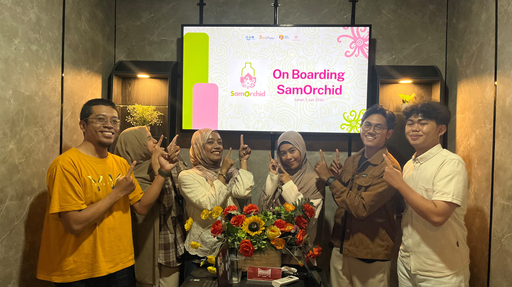

Kabar Gembira! Inovasi "SAMOrchid" Sukses Lolos Pendanaan P2MW Kemdikbudristek 2026
Startup inovatif berbasis teknologi agrikultur, SAMOrchid, secara resmi diumumkan sebagai salah satu tim yang berhasil lolos dan menerima pendanaan P2MW 2026.